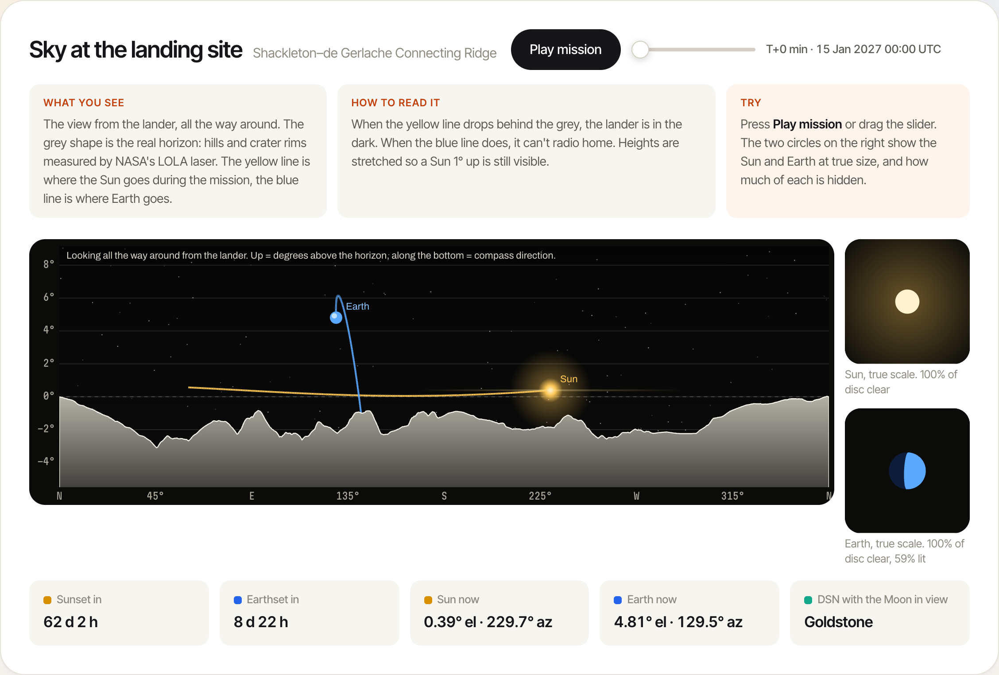

How it works
Ask. See. Rescue.
01
Ask in plain English
Type "best south pole site if we slip 30 days", or pick up to four sites and a date. Earthset gives one clear answer, GO or NO-GO, with the sunlight, Earth link and longest darkness behind it.

02
Stand on the surface
See the real 360° skyline from the landing site, measured by NASA's LOLA laser altimeter, with the Sun and Earth moving across it. Press play to watch the whole mission.

03
When the launch slips, find a way out
Earthset scores every landing day for two years, then suggests the next good date, a better site, or a better-lit spot a few hundred metres away.